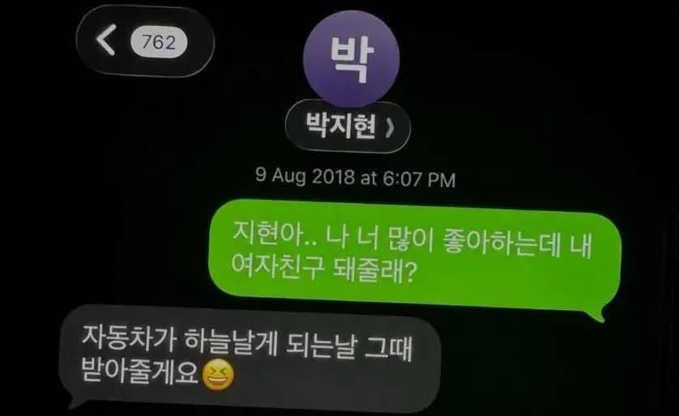
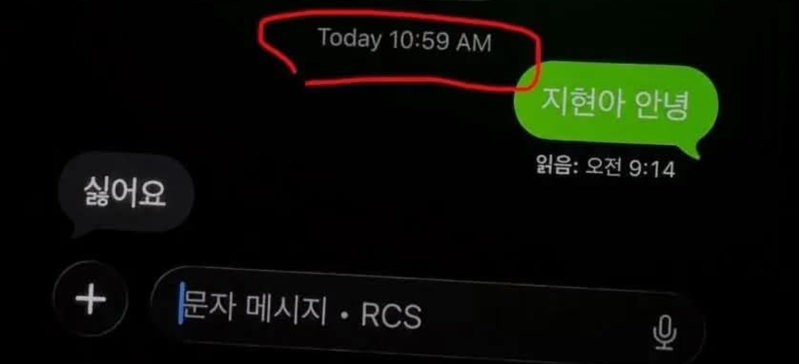

시발년아


시발년아
날았다기 보다는 체공 활공
자작추
아니다
개붕아 힘내
아니라니까
자작추...
아니라고
힘내세요 작성자님
그... 힘내세요....
자작추
지현씨 괴롭히지 마라
힘내쇼...
개하다 추붕아...
8년의 기다림 개같이 실패
많이 삐졌네 몇번을 올리는거야
기운내세요
AI잔아
ㅇㅇ 자동차가 저렇게 하늘을 날리가 없잖아 ㅎㅎ
세상에 여자가 지현이 뿐이가..많다
이거 해외밈이던데
자작추
카톡으로 안한거보면 주작같긴하지만 재밌네
날은거아님 공중부양한거임